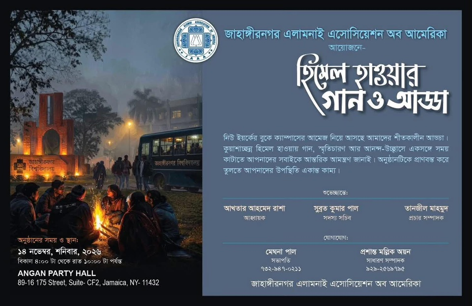

হিমেল হাওয়ার গান ও আড্ডা — Himel Hawar Gaan o Adda
Saturday, November 14, 2026 — 4:00 PM to 10:00 PM
Angan Party Hall
89-16 175 Street, Suite CF2, Jamaica, NY 11432
A winter evening of songs, memories, and togetherness — bringing the warmth of the Jahangirnagar campus to the heart of New York. All alumni and friends are warmly invited.
Organized by the Jahangirnagar Alumni Association of America (JAAA).
Convener: Akhtar Ahmed Rasha • Member Secretary: Subrata Kumar Pal • Publicity Secretary: Tanzil Mahmud
Contact: Meghna Pal (President) — 732-487-0211 • Prashant Mallik Ayon (General Secretary) — 929-236-8155
